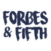

Experiences at a Glance
UX Research Intern May 2024 - Present
AI Intern January 2024 - May 2024

Born and raised in Japan as a Dutch-American, I have always been interested in the way language and culture affect how things look – especially interface design.
At the University of Pittsburgh, I am a Frederick Honors scholar studying Digital Narrative and Interactive Design (with minors in Spanish and Global Studies). By majoring in DNID, a joint program between the Computer Science and English departments, I am able to pursue advanced coding projects while also having the space to research how liberal arts shape human-computer interaction.
In my free time, I love to go on hikes and try out new recipes. As proud as I am of the work on this website, I'm pretty sure my food Instagram account (@saskia.makes) is my magnum opus.
As a UX enthusiast, I've been fortunate to work with some amazing organizations and individuals. From redesigning the Forbes & Fifth research journal's website and creating graphics for each edition, to researching an open-source interface for preserving Indigenous folklore and traditional ecological knowledge in Ecuador, every experience has taught me something new about the power of design.
In the past year, I've had the chance to apply my UX skills in more business-focused settings. As a UX designer at InvolveMINT, a techs startup, I worked on projects that combined environmental work with interface design. And as an AI intern for NIIT, I explored the potential of machine learning and quantitative modeling to create realistic simulations of complex systems.
Now, as a UX research intern at Broadcom, I'm excited to dive deeper into the possibilities of AI within UX workflows. With graduation on the horizon (May 2025 can't come soon enough!), I'm looking forward to applying my skills in a full-time role.